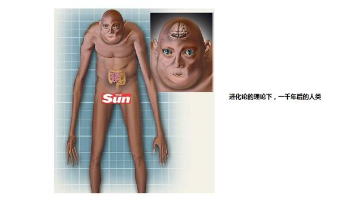
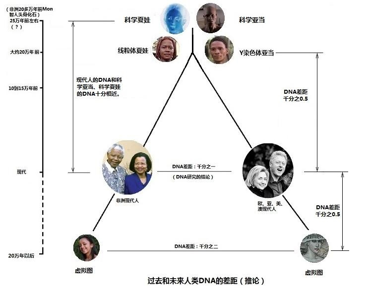

|
五．进化论是推进人类学研究的动力吗？
进化论和骤变论的学者们都认为，人和黑猩猩是共祖的。从前面一节的内容所看到的，这个共祖的前提，是没有根据的。那么，这个不真实的“共祖”论，当然不会成为研究的动力。我们来看看佩奇团队对Y染色体研究的例子。
在前一节我们看到，佩奇领导的研究团队发表的文章[注释3]，发现人类和黑猩猩的Y染色体基因数目分别为78和37，有53%的差异，这个研究结果应该是表达人和黑猩猩的DNA的确差异很大。然而，认为“黑猩猩和人类是共祖的，是6百万年以前发生了分离”，以及“人和黑猩猩的DNA差异有98.77%的相似”，在这些进化论错误前提的束缚下，佩奇迷茫了。是谁的Y染色体产生了变化？由于进化论者们都认为人进化了，黑猩猩没有进化，那么他只能作出这样的推论：人的Y染色体和黑猩猩分离后，产生了“退化”。于是他们开始和黑猩猩的Y染色体对比，寻找哪一部分是所谓后来“增加”的，哪一部分是所谓“丢失”的。凭什么认为Y染色体的编码有“增加”和“丢失”呢？就是凭“如果人和黑猩猩共祖”，这样一个不存在的荒唐前提来解释的。
一个本来不存在的假定引导着他们的研究，因此得出的结论是人类的Y染色体在不断退化。他还忘记了一个事实：黑猩猩Y染色体长度只是人Y染色体长度的44%（参看第7节）。如果黑猩猩和人类是共祖的，为什么黑猩猩的Y染色体那样短？
Y染色体是人类最稳定的染色体，Y染色体亚当以来的十几万年，除了比例很小的突变（SNP）以外，几乎没有变化，否则也没有Y染色体亚当理论。Y染色体亚当标记的729个字符，在全世界人的身上都一字不差，人类的Y染色体不断退化的认识显然是错误的。
然而，在“退化”这个错误前提的推论下，引导出更荒谬的推论。2008年4月28日，著名的媒体ABC新闻网的科学新闻中以“展望一个没有男人的世界”（Envisioning
a World Without Men，LONDON, April 28, 2008）为题报道：牛津大学遗传学教授布赖恩・赛克斯（Bryan Sykes）说：Y染色体“在大约125,000年后会消失（disappear altogether in about 125,000 years.）”。 有评论指出，如果按照这个理论， “人类的Y染色体将要消失，大约125,000年后，男性也许就将从地球上灭绝，地球将变成真正意义上的女儿国”。
2012年10月，英国太阳报曾经有一条新闻，新闻的标题是，“较小的大脑， 更多的皱纹，更少的牙齿”（Smaller
brains, more wrinkles, fewer teeth）。
指出：“在过去的几千年中，进化使我们的身体和脸型发生了变化，这种变化仍然还在发生”。并刊登了一幅图画，显示了根据整骨疗法医生盖里・特雷恩（Osteopath
Garry Traine ），牙医菲利浦・斯泰默尔博士（Dr Philip Stemmer）等一些科学家们的预测，描绘出的1000年以后人的形象。

可能这个新闻太震撼了，甚至引起了恐慌。目前看到在这个图片下，有一段文字: “不要担心，伙计们，这不是另外的几千年的事！”(...don't worry lads, it's not for another
1,000 years!)。无论如何，这些都是进化论指导下，所预测出来极其荒谬的人类前景。
从本网第2节第3页的“DNA编码遗传差异减半定律”，可以推论出，自人类产生以来，Y染色体DNA编码没有大的改变。“Y染色体亚当”的Y染色体和现代人的差别，仅仅是现代人Y染色体最大差别的一半。20几万年以来，人类没有发生任何进化。相信即便再过几十万年，人类依然没有多大变化，如下图所表示。

亲爱的读者们，您的看法是怎样的呢？
六．达尔文进化论对社会学的影响
有一部电影纪录片，名叫“苏维埃的故事” [注释4]。这部拍摄于2008年的纪录片，记录了那么多悲惨的历史事件，竟然和一个错误的生物学理论有关。
电影纪录片回顾了上世纪30、40年代，在德国发生的对犹太人的大屠杀，并告诉我们：“纳粹思想，是建立在一种错误的生物学理论之上”。在这个错误的生物学理论上，希特勒建立了一些更加错误的社会学理论――极端残忍的纳粹主义。纳粹主义的基本理论中包括：宣扬种族优秀论，认为“优等种族”（即雅利安人）有权奴役甚至消灭“劣等种族”，由此，他们找到了杀人的理由。区分“优等种族”和“劣等民族”的生物学理论，当然就是进化论。
犹太民族，这是个备受欺凌的民族。但是，在世界的历史中，正是借助犹太民族的智慧，为全人类点燃了无数文明的火花。关于纳粹对他们的大屠杀，我们早已经知道很多了，然而，进化论在其中所产生的作用，还很少看到。如果人是由动物进化出来的高级动物，是在千万年决斗、厮杀过程中，在无数次的淘汰、选择中存留下来的，那么，现代的种种残忍事件，也仅仅是那些残忍的继续，当然也无可厚非了。达尔文自己就从进化论的理论预测：“甚至，我们可以希望，比今天的高加索人（白人）更要文明，而另一端将是低的像狒狒一类的猿猴，而不是现在那样的一端是黑人或澳大利亚土著居民，而另一端是大猩猩。”
当现在我们知道，人类并不是那样进化来的，对于纳粹的种种暴行，进化论就难辞其咎了。
纪录片的另一部分，告诉了我们那些在前苏联发生的、同样残忍的历史，并指出：“共产主义是建立在一种错误的社会学理论之上。”。进化论对社会学的负面影响是巨大的。
七．必须解除进化论这个百年的枷锁
人类学是一个特殊的科学，因为它有巨大的社会意义和社会影响。长期以来，一直受到政治的、宗教的和学派的约制，就像一个个枷锁，长期戴在了人类学的身上。
而目前人类学的枷锁，就是进化论学派。这是一个特别的、以科学为名义的枷锁，人类学已经被它禁锢一百多年了。在美国从事研究的一位医学博士朋友曾经对我说“进化论是生物界不可碰的红线”，也有人说进化论是生物学界的专制主义。长期以来，在人类学上，仅仅就凭借那些骨头和推测，建立起了专制式的达尔文主义的统治。
从互联网上，很容易找到建立这个专制统治的美国科学界和教育界的名册。打首的是美国国家科学教育中心（The National Center for Science Education NCSE)。在他们网页有关进化论的页面上，是这样表述的：“进化论是包含在国家科学教育标准和大多数州的科学标准。”（Evolution
is included in national science standards and most state science standards.）
在这里可以看到来自科学、学术和教育机构的声明，加上美国国家科学教育中心，总共有83个大学、研究机构和政府部门的署名，可谓是北美以致北美之外的人类学界的精英荟萃。
(点击可看名册)
这些机构的声明，如同某些专制统治的国家对主义和领袖的称赞那样，都是千篇一律地对进化论进行歌颂。有代表性的是美国人类学协会执行理事会的声明：
“进化论是一个人类学的许多方面（包括体质人类学，考古学，文化人类学和语言学）的基本组成部分，是现代科学的基石，是生物学，地质学和天文学的中心。”
“进化的原理都经过反复测试，根据科学的标准，发现这个原理是有效的。
进化原理应该是大学预科课程的一部分，它是在人类和非人类生物学上，理解生命的起源和发展最好的科学解释和钥匙。”
（Affirmation
The Executive Board of the
American Anthropological Association affirms that:
Evolution is a basic component of many aspects of anthropology (including physical
anthropology, archeology, cultural anthropology, and linguistics) and is a
cornerstone of modern science, being central to biology, geology, and
astronomy.
The principles of evolution have been tested repeatedly and found to be
valid according to scientific criteria. Evolution should be part of the
pre-college curriculum; it is the best scientific explanation of human and
nonhuman biology and the key to understanding the origin and development of
life.）
现在已经知道，生物的全部遗传信息都承载于DNA编码之上，显然，DNA编码应该是认识生物遗传机制的核心。进化论产生的一百多年来，一直是建立在生物形态和骨骼解剖学之上，基本没有从DNA编码去认识生物物种。分子人类学已经依据DNA编码的研究，提出了“亚当理论”和“夏娃理论”，已经否定了北京猿人是中国人祖先、尼安德特人是欧洲人祖先。（这两个结论一直是进化论在人类进化上的经典结论。）美国的科学和教育机构，对这些重要的科学新成果，却一直持视而不见的态度。
2012年11月发布了1092个人的样本测定结果，宣布全世界人的常染色体DNA编码SNP只有3.6MB，也就是29亿常染色体的DNA编码，平均只有千分之1.2的差别。人与人之间，平均每600个DNA编码序列，有599个点上的字符都是一致的，仅仅只有一个字符的差别。由此看到全世界人的DNA编码是那么一致，证实我们全来自“唯一的一对父母”，这才是真实的科学。
从它们的联合宣言来看，进化论还是科学吗？科学需要这样大张旗鼓的联合宣言吗？牛顿的“万有引力定律”不就凭着“一个苹果”吗？牛顿的力学理论和爱因斯坦的相对论需要这样的联合宣言吗？有第二个需要80多个科学机构发表声明来维护的科学吗？需要这样维护的科学，必然已经是危机的科学了。他们面对的危机是分子人类学、是包括他们自身血液中的DNA编码。
他们强调进化论是唯一正确的生物学理论，在他们看来，反对进化论就是反对科学。在这些机构中，有许多自称达尔文金犬的领导阶层，毕生在至力于维护进化论的观点，不能容忍任何人对进化论有所怀疑，因为怀疑进化论就怀疑了他们一生的努力。然而，科学是无情的，错的就是错的。在科学道路上认识错误，不是耻辱。在人类历史上，曾经存在着错误科学认识的比例还少吗？但是，正是有着许多错误的和正确的科学认识的台阶，才搭出了现代科学的高塔。错误并不可怕，有意建构一个巨大势力来维护错误的科学，才是可怕的事情。
我们看到本应该推进科学和教育发展的机构以及网站，变成了仅仅为着捍卫进化论观点的网站。本来应该推进科学的研究机构，却对新的科学进行遏制和封杀。在他们的网站上，看不见已经有20多年历史的“分子人类学”。看不见人类的DNA编码序列信息，看不见染色体数目差异对物种隔离的事实，看不见“Y染色体亚当”和“线粒体夏娃”的影子。进化论的一些重大错误：如北京猿人、尼安德特人的祖先地位，在他们的网站上，更是不敢提及。显然，这些新的科学，对于他们是致命的毒药。在美国的所有学校中，从中学到大学，无不是处在这些机构的统治之下。我们可怜的孩子们，都处于这个统治之下。
其实，如果他们要否定分子人类学，否定全世界人出自一对父母，否定本网的内容，对他们来说是十分容易的事情，那就是去检测他们血液中的DNA。如果他们的DNA中男人没有“常染色体的标记”、没有“Y染色体亚当标记”、没有“线粒体夏娃标记”；女人没有“常染色体的标记”、没有“线粒体夏娃标记”，他们就是当然的胜利者。这样轻而易举的检测，是他们应该做的事情。
面对那82个大学、研究机构和政府部门，本网所亮出的剑就是DNA的编码和解码，尊敬的对手们，请亮出你们的剑。
八. 教科书必须面对的质疑
非常遗憾，那么多进化论的学者、教授、专家，在染色体对数的鸿沟和人类DNA编码的高度一致，这两个简单问题上，从来没有看见他们的解释。在他们的头脑里，几乎没有任何DNA编码的知识和分子人类学的研究成果。
无论这个阵营多么强大，所有的教师和教科书必然要面对4个非常简单的问题：
(1)全世界人的DNA编码这样高度的一致，怎么会是随机地进化产生的？
（2）既然不可能到超市购买23.99对的鸡蛋，进化论是如何能跨过染色体对数的鸿沟？
（3）进化为什么只进化出一个男人、一对父母？
（4）米歇尔和希拉里有没有进化的差别？
每一位看过本网的孩子和孩子的家长，每一位知道了人类DNA编码和解码科学的孩子和孩子的家长，他们都会向他们的生物学教师发出上面的疑问。这是教师们一定要面对的问题，也是教科书必然要面对、无法回避的问题。更是那80多个机构和那些自称达尔文金犬的学者们无法回避的问题。
我们不能继续将进化论这个虚假的科学，再教给孩子们。不能将这个有着重大危害的错误理论，继续传输给一代又一代我们的子孙。
这是一场DNA编码和骨头化石的战争，是血液和肤色的战争，谁胜谁负，已经完全没有悬念了。
九．生物学上“皇帝的新衣”：
你的每一根毛发、每一点唾液、每一滴血，都记录着你生命的历史，都证明着你生命的来源，这是任何人无法否定的记录，也是任何人无法推诿的事实。
人类是由进化或骤变产生的理论，都是错误的、没有科学根据的假说。
我们都是DNA编码下的人。从我们自身的DNA看到的，我们全都是出于一位男人，也是出于唯一的一对父母。自他们以来，连微进化都没有发生，将来也不会发生。
面对貌似强大的进化论，这些浅显的道理，就像那位小男孩所说的：“皇帝没有穿衣服”。
注释：
1. Book，Darwin
and His Critics: The Reception of Darwin's
Theory of Evolution by the Scientific Community，David
L. Hull，The University of Chicago
Press.
2.关于表型正常的解释：The
phenotype is "the total of everything that can be observed or inferred
about an individual." ，Theodosias Dobzhansky
1962, Mankind Evolving. New Haven: Yale University p. 41-42.
3.Hughes, Jennifer F. et al. “Chimpanzee
and human Y chromosomes are remarkably divergent in structure and gene
content.” Nature 463.7280 (2010): 536-539.
4. The Soviet Story，A 2008 documentary film.
5.Heling Liu,恩格斯为何推崇达尔文进化论, Science ,Technology and Dialectics, Vol
. 22 No. 6,Dec. 2005
上一页 1
2 3 回主页
|